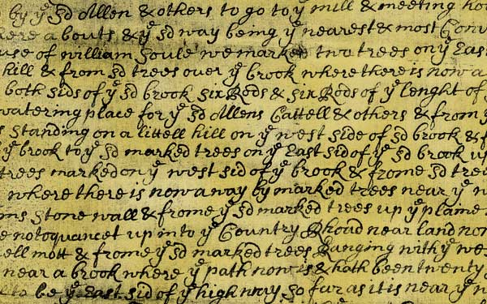

akin 1705 typeface
This typeface was created for an elective course in typeface design. It is a historical typeface based on the handwriting of John Akin, a New Bedford town official in 1705. The sample was obtained from the New Bedford Whaling Museum Library, The handwriting itself is a nightmare, but I found the shapes of many of the letterforms to be very interesting. I took it upon myself to draw out the most interesting characters and make them work together as a complete typeface.

Here you can see the characters closer up. The kerning on many pairs can be incredibly difficult. To counteract this I plan on adding different versions of each letterform so that the best pairs can be chosen.
This is one part of the original sample I located.